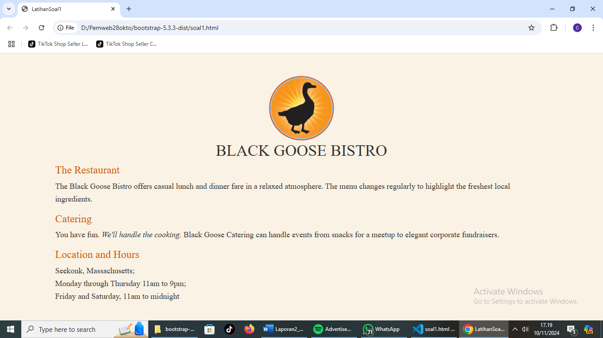
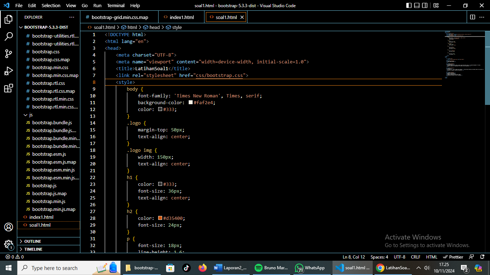

fungsi Bootstrap yang terlihat dalam halaman tersebut:
1. Container Layout
Fungsi dari kelas .container pada Bootstrap adalah untuk mengatur lebar konten agar berada di tengah halaman dan memberikan margin otomatis di sisi kiri dan kanan. Ini membantu tampilan terlihat lebih rapi dan terstruktur, dengan konten yang terpusat pada layar.Pada gambar, kita bisa melihat bahwa elemen-elemen seperti judul (“BLACK GOOSE BISTRO”) dan bagian-bagian lainnya (seperti “The Restaurant”, “Catering”, “Location and Hours”) disusun dengan jarak tepi (margin) yang seragam, memberikan tampilan yang rapi dan terfokus.
2. Typography yang Konsisten
Meskipun kode ini menggunakan beberapa gaya khusus di dalam tag style, Bootstrap tetap menyediakan font default dan tata letak untuk elemen-elemen HTML. Kelas container di Bootstrap secara otomatis memberikan spasi yang baik di sekitar teks, membuat elemen-elemen terlihat lebih profesional dan mudah dibaca.Pada output gambar, teks terlihat memiliki ukuran font dan spasi yang seragam, membantu memastikan keterbacaan yang baik.
3. Responsivitas
Bootstrap mengatur agar .container memiliki tata letak yang responsif. Artinya, pada layar yang lebih kecil (seperti pada perangkat seluler), .container akan menyesuaikan lebarnya agar konten tetap terlihat baik tanpa perlu menggulir secara horizontal. Hal ini membantu halaman tetap nyaman dilihat di berbagai ukuran layar.Meskipun tidak terlihat dalam gambar, jika diakses dari perangkat seluler, konten ini akan tetap berada di tengah dan terlihat rapi tanpa perlu penyesuaian tambahan.